| |
Table of Contents
This section provides step-by-step instructions how to use Virtual Apollo and especially the AGC/DSKY. This is done in form of tables with the following columns:
| Caption | Description |
|---|---|
| Panel | Shows an image of the panel during the current step. |
| Astronaut | This is what you have to do. The following abbreviations are used as in the original documentation: V is short for VERB, N is short for NOUN, and E is short for ENTR. |
| DSKY | This is what the DSKY shows, often only verb and noun code are notated. A preceeding F means "flashing". The three lines below are named R1, R2 and R3, R is short for "register". |
| Remarks | Detailed instructions and comments. |
Because the correct startup is not implemented at the moment, this procedure is not really necessary, except the RSET perhaps at the beginning to get rid of the program alarm. But if you use it the first time you could do me a favor when you try it just "to check the systems".
| Panel | Astronaut | DSKY | Remarks | ||||
|---|---|---|---|---|---|---|---|
| Program alarm at startup | |||||||
| 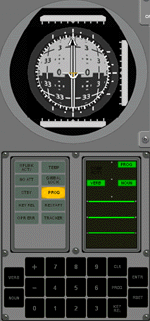 |
|
| After startup the FDAI and the DSKY should look as shown on the left. Because
the correct AGC initialization is unkown at the moment, there's an 1107 "phase table
failure" program alarm, so you have to press RSET to clear
it. You can view the alarm code by keying in V05 N09E before. | ||||
| Start program P00 | |||||||
| 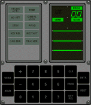 |
| Start program (also called "major mode") P00, the the AGC idling program or "Goto
Pooh" in Apollo slang. Very rarely you will perhaps get an 1520 program alarm "V37 request not permitted at this time". I'm not sure if this is historical correct, but you just have to try again. | |||||
| Light test | |||||||
| 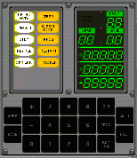 |
|
| The real AGC has no "automatic self-test" at startup, but you could perform a light test if you want to see fancy flashing lights. | ||||
| V37E 00E | To clear the DSKY after light test, change to program P00. | ||||||
| Check time synchronization with Orbiter | |||||||
| 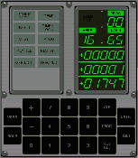 |
|
| If you are using Virtual Apollo the first time it is useful to check if the AGC and Orbiter are running synchronously. R1 shows the hours of AGC time, R2 the minutes and R3 the seconds in the format "XXX.XX". The DSKY on the left shows 0h 1min 17.47s. The time should be the same as the Orbiter simulation time with a constant difference of about 0.5s. | ||||
| 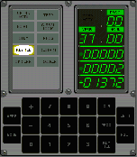 | V37E 00E | To clear the DSKY change to program P00. Don't worry about the KEY REL light, it comes up because the AGC wants to show the time while you force it to show your input. If you press a key in error, you can press KEY REL to release the display again. | |||||
Of course you can do a lot of more stuff, please check out [VirtualAGC] for further informations. A very good reference for AGC operations or internal systems is also [Apollo15Delco].
Let's begin with the "real" startup procedure, from now on every single step is vital. First we have to turn on the Inertial Measurement Unit (IMU). Normally this is done by using the G/N IMU PWR switch located on "Panel 100" as shown in [ApolloTrainingG&N].
Figure 1. Apollo CSM Panel 100[5]
In [NCPP] there is no "Panel 100" at the moment and therefore not in Virtual Apollo. In Virtual Apollo the TRANS CONTR PWR switch is abused for that purpose and as this is the only working switch at all you probably will have no problems finding it.
| Panel | Astronaut | DSKY | Remarks | ||
|---|---|---|---|---|---|
| 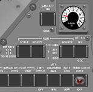 |
| To turn on the IMU put "that wrong switch" to upper position. | |||
| 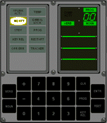 |
| When the NO ATT light is out again the IMU is working. That means for example
that the spacecraft changes it's attitude against the inertial platform because of
Earth rotation. This effect is a little bit to small to see it on the FDAI, but you can monitor the gimbal angles with
V16 N20E. You can turn off the IMU, too. But if you do this in flight, you will crash into ground (not really but the AGC will think this) and until we have no G&N Station you can't realign your IMU... |
All systems are running, let's go to prelaunch...
During Prelaunch the IMU platform, also called stable member (SM), is aligned to launch position. This is shown in the figure below with one difference: In Virtual Apollo the spacecraft azimuth is 90° East, not 270° West as shown in the figure.
Figure 2. CSM Prelaunch Alignment[6]
Because of this the measured values in Virtual Apollo differ from the values in the original documentation. For example the roll angle shown at the FDAI in prelaunch alignment should be 90° + launch azimuth as shown in [Apollo15LaunchChecklist], the roll angle in Virtual Apollo is 270° + launch azimuth. But as long as the configuration is consistent this is no problem and you will reach the correct orbit.
| Panel | Astronaut | DSKY | Remarks | |||||||||||||||||||
|---|---|---|---|---|---|---|---|---|---|---|---|---|---|---|---|---|---|---|---|---|---|---|
| 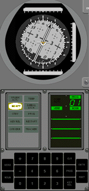 |
|
| After starting P01 "Prelaunch or service initialization program" the IMU changes
to course align mode and drives the stable member to prelaunch position. Then it changes automatically to P02 "Prelaunch or service gyro compassing program". Because the AGC commands during P02 are very small you can't see them at the FDAI, but you can monitor the IMU gimbal angles with V16 N20E. | |||||||||||||||||||
| 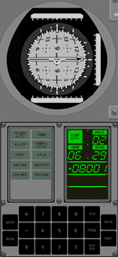 |
|
| The AGC did a prelaunch alignment for launch azimuth 0° North. Since the correct launch azimuth for Apollo 15 is +80.008°, we have to change it. This is done with verb 78. The DSKY shows present launch azimuth, with verb 21 you could "load component 1 into R1" and change the launch azimuth to +80.01°. Press CLR to clear a wrong input. | |||||||||||||||||||
| 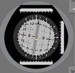 | ... to new launch position | After pressing PRO the AGC changes the attitude of the stable member with gyro pulses to the correct launch azimuth. |
Now everything is ready for launch, just lean back and wait for lift-off.
The lift-off and the complete Earth Orbit Insertation are done with the [NASSP] autopilot and you can only observe the ascent. There is no "AGC takeover of Saturn" or manual control at the moment, but the AGC gets acceleration and attitude data from Orbiter, "measured" by the PIPAs (Pulsed Integrating Pendulous Accelerometer) and the gimbals and it calculates velocities and orbital elements from that.
A few seconds before lift-off the AGC changes automatically to program P11 "Earth Orbit Insertation Monitor Program". In case that fails, you can key in V75E as a backup, but I fear this never will happen in the current version. If you like however you could you could enter V75E before launch and watch the Saturn hoover...
| Panel | Astronaut | DSKY | Remarks | |||
|---|---|---|---|---|---|---|
| 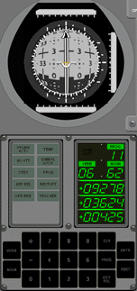 |
| Noun 62 shows in R1 the inertial velocity in feet per seconds, in R2 the vertical
velocity in ft/s and in R3 the altitude above launch pad radius (6,373,338 m) in
format XXXX.X nmi, that is nautical miles. The DSKY on the left (short after SIC/SII
staging) shows an altitude of 42.5 nmi. Please remember these values are calculated by the original AGC software! The Orbiter values converted in "Apollo units" are shown at the bottom of the screen, so you can compare and check. In fact it's a big problem at the moment to get the Orbiter universe compatible with the Apollo/AGC universe. | ||||
| 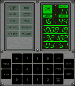 |
|
| With verb 82 you "request orbit parameter display", the DSKY changes to noun 44 and shows in R1 the current apoapsis, in R2 periapsis altitude, both in format XXXX.X nmi and TFF (Time of Freefall) in R3 in format XX minutes XX seconds. These values are very "sensitive" about the problems mentioned above. So the Orbiter values as shown at the bottom of the screen could differ, I hope we could improve that in later versions. | |||
|
| With PRO you come back to the screen shown before. In that way you can toggle between the two screens. |
After SIVB engine cutoff (SECO) you are in an almost circular Earth orbit, called "Earth Parking Orbit" (EPO). Like before you can compare the Orbiter state and orbital element values with the values calculated by the AGC. The differences are hopefully small enough so that nevertheless the AGC is working properly, we will see in future versions...
The SIVB RCS is enabled (in Orbiter sense), so you can change the attitude of the spacecraft, for example to play with the FDAI.
| Panel | Astronaut | DSKY | Remarks | |||
|---|---|---|---|---|---|---|
| 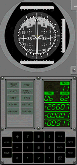 |
| The DSKY shows the inertial velocity, the vertical velocity and the altitude as
shown in Launch and Earth Orbit Insertation.
The Orbiter values measured at that moment were 25601 ft/s inertial velocity, -2 ft/s vertical velocity and 92.2 nmi altitude. | ||||
| 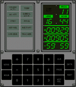 |
|
| The DSKY shows apoapsis and periapsis altitude as well as TFF (Time of
Freefall) as shown in Launch and Earth Orbit
Insertation. The Orbiter values measured at that moment were 92.2 nmi apoapsis altitude and 89.7 nmi periapsis altitude. | |||
|
| With PRO you come back to the screen shown before. In that way you can toggle between the two screens. |
When in orbit you can for example change your attitude in that way that the IMU gets a "gimbal lock". That means when you change the middle gimbal angle (yaw angle) near to +/-90° the outer and inner gimbal axes are almost parallel and the IMU gets "locked" in this position so you are not able to determine your attitude properly. Because of that there are these red circles on the FDAI ball.
Figure 3. FDAI/IMU Gimbal Relationship[7]
If you move your FDAI near or in a red circle you'll first get a gimbal lock warning. If you go further you get a no attitude warning and the AGC switches the IMU to coarse align mode. In future versions you will have to do an IMU caging and to realign your stable member, but at the moment there's no G&N station to do this.
| Panel | Astronaut | DSKY | Remarks | ||||||||||
|---|---|---|---|---|---|---|---|---|---|---|---|---|---|
| 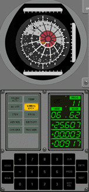 |
|
| The GIMBAL LOCK light will turn on when you move the FDAI into one of the red circles. |
That's all for the moment, it's not much but I hope you get an impression how a Virtual AGC integration could look like. There are of course many bugs and missing features, for example saving is not working, time acceleration is problematic and many more. It will be a big challenge and a huge amount of work to build a complete add-on from the actual version.
So if you are interested in Virtual Apollo, feel free to contact me, any help is welcome!
| |